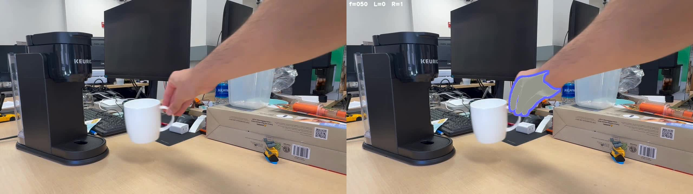
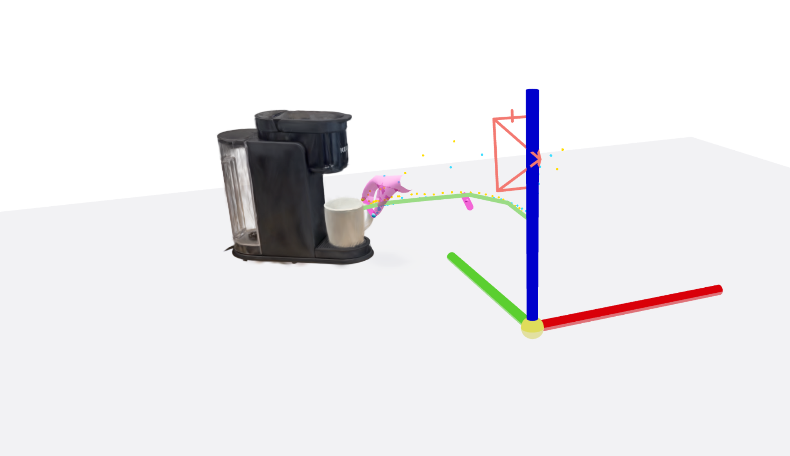

From HAMER tracker output → perturbation grasps per mug → trajectory IK → live viewer. All scripts live in ~/Desktop/armlab_splat_tracking/; venv: ~/Desktop/real2render2real/.venv.
Stages: SAM3 → SAM3D batch (cousin generation) · 0. Action-video tracking (DINOv3 + WIDE_ROT) · 1. HAMER input · 2. Perturbation grasps · 3. IK over trajectories · 4. View results · 4b. corl_mug → cm re-target (2026-05-24) · 5. Live CM perturbation · 6. R2R2R IsaacLabViser data-gen rollout · 6b. xarm7_runner_v2 single-process cm×mug×DR (iter22+) · 7. Interactive live-IK viewer (home → approach → carry) · 8. Cousin mug → IsaacSim USD (mug_1 / mug_2 / mug_3 worked) · 8b. MV-SAM3D textured CM → USD (2026-06-04) · Exact commands · Reference paths
Upstream of everything below. Takes a folder of RGB photos of the same object class + one text prompt, runs SAM3 segmentation per image (model loaded once) and SAM3D 3D generation per image, and writes a folder per object containing a Gaussian-splat .ply and a UV-textured mesh .zip. Default values match this command verbatim, so the bare invocation works once ~/Pictures/mug_shots/ has images in it.
# Drop RGB photos into the default input folder, then: bash ~/Desktop/sam3/run_batch_sam3.sh # Override any flag inline (pass-through "$@"): bash ~/Desktop/sam3/run_batch_sam3.sh --prompt "coffee mug" --name keurig bash ~/Desktop/sam3/run_batch_sam3.sh --image-dir ~/Pictures/cans --prompt can --name can bash ~/Desktop/sam3/run_batch_sam3.sh --skip-existing --keep-debug # Output layout (default name=mug, out-dir=~/Desktop/sam3_outputs): # ~/Desktop/sam3_outputs/mug1/mug1.ply ← Gaussian splat (~30–50 MB) # ~/Desktop/sam3_outputs/mug1/mug1_mesh.zip ← OBJ + MTL + albedo PNG # ~/Desktop/sam3_outputs/mug1/sam3d.log # ~/Desktop/sam3_outputs/mug2/... # (FAILED_no_mask.txt if SAM3 found nothing in that image; #N.obj instead of _mesh.zip if SAM3D's UV bake fell through to vertex color) # Inspect any result in viser: PY=~/Desktop/real2render2real/.venv/bin/python $PY ~/Desktop/real2render2real/load_object_splat.py \ --splat-paths ~/Desktop/sam3_outputs/mug1/mug1.ply --viser-port 8080
Reference run (2026-05-22): 10/10 photos succeeded in ~7 min (≈40 s/object) on an idle RTX 5090. Implementation in ~/Desktop/sam3/batch_sam3_to_3d.py (driver) + ~/Desktop/sam3/run_batch_sam3.sh (one-line wrapper). Per-image SAM3D timeout 900 s; SAM3 loaded once and freed before SAM3D pass.
cd ~/Desktop/armlab_splat_tracking PY=~/Desktop/real2render2real/.venv/bin/python # 1. Open hamer viewer (defaults to nips_mug + cousin-swap dropdown) $PY interactive_hamer_xarm.py --mug nips_mug --port 8095 # In GUI: Cousin mug swap → mug_X → Perturb saved grasp → Run sweep # Auto-saves valid grasps to mug_X/grasps/grasps_interactive_xarm.txt # 2. Pre-compute IK over (31 perturbations × all grasps × 92 frames) $PY /tmp/compute_mug_1_combined_ik.py # writes mug_X/grasps/mug_X_ik_table.npz # 3. View $PY view_perturbation_trajectories.py --port 8099 # In GUI: Mug variant → mug_X → Sample → Grasp → ▶ Play
DINOv3-distilled gsplat tracker on the action video → per-frame mug SE(3) (tracked_poses.npy) that downstream stages consume. Validated 2026-05-18 on IMG_8720 portrait push + IMG_9122 landscape pour.
Only 3 things vary per scene: the splat path, the SAM3 text prompt, and the capture orientation (which dictates WIDE_ROT). Everything else is fixed.
| Env var | Value | Why |
|---|---|---|
RASTERIZER | 3dgs | Must match splat training mode. ns-train dig → 3DGS; 2dgs-dig → 2dgs. Mismatched = silently wrong renders. |
INIT_SEEDS × INIT_ITERS | 16 × 300 | Frame-0 multi-start. Best seed by DINO loss wins. |
INIT_RGB_W + INIT_SIL_W | 5.0 + 10.0 | D_all init loss. IoU 0.97 vs 0.67 for DINO-only on the IMG_8720 frame-0 sweep. |
WIDE_ROT | 1 for landscape / unusual roll0 (default) for portrait scans | Swaps the 16 init seeds from full-360 yaw + ±17° tilt jitter to 4 cardinal tilts × 4 yaws. Cardinal tilts = {upright, Rx=+90°, Rx=-90°, Ry=+90°}. Required when the camera roll differs from the splat scan's gravity axis. |
SIGMA_TRANS + SIGMA_ROT | 1.0 + 1.0 | Light post-hoc Gaussian smoothing on raw → tracked_poses.npy. Tracker default 3.0/2.0 over-smooths; 0.8/0.5 jitters; 1.0/1.0 is the sweet spot. |
SKIP_VISER | 1 | Required in batch/sweep scripts. Without it, viser blocks the loop after object 1. |
--masks-dir | SAM2-propagated | Required. Tracker's internal SAM3 has hardcoded 0.5 confidence; silently drops frame 0 on novel classes. |
~/Desktop/armlab_splat_tracking/)# 1. SAM2 mask prep — sam3-confidence 0.2 catches novel object classes bash prep_<scene>_sam2_masks.sh # → ~/Downloads/outputs/<scene>/sam_<obj>/masks/ + overlay.mp4 # 2. Tracker — gym_bro-style, WIDE_ROT for landscape captures bash track_<scene>_gymbro.sh # → ~/Downloads/outputs/<scene>/track_<scene>_gymbro/ # ├── tracking.mp4 # ├── tracked_poses_raw.npy (per-frame Adam + outlier reject) # ├── tracked_poses.npy (above + σ=1.0 Gaussian smoothing) # ├── loss_history.json # └── frame_XXXX.png × N
DEBUG_INIT_SEEDS=1)When the tracker visibly fails to converge or all 16 seeds finish in a flat ~0.4 loss band, dump the init+post-Adam grid:
INIT_ONLY=1 DEBUG_INIT_SEEDS=1 WIDE_ROT=1 bash track_<scene>_gymbro.sh # → ~/Downloads/outputs/<scene>/track_<scene>_gymbro/init_seeds_grid.png
The grid shows 16 cells, each with (init pose | post-Adam pose | DINO loss). Best seed is highlighted green. Diagnostic reading:
WIDE_ROT=0, flip it on. If already on, run the per-frame yaw refinement post-step.python viser_mug_push_gymbro_overlay.py \
--run-dir ~/Downloads/outputs/<scene>/track_<scene>_gymbro \
--video ~/Downloads/<scene>_half.mp4 \
--cam-K ~/Downloads/<scene>_cam_K_half.txt \
--poses-file tracked_poses_raw.npy
# Panels: 3D scene (mug splat + trajectory polyline) | RGB video | RGB + projected splat
# Controls: smoothing σ ∈ [0, 3] (default 1.0); checkbox: color splat by DINOv3 PCA
| Scene | Splat | Capture | WIDE_ROT | Best DINO @ f0 | IoU |
|---|---|---|---|---|---|
| IMG_8720 (push) | mug_push 3DGS, 8071 g | portrait 360×640 | off | ~5.50 | 0.967 |
| IMG_9122 (pour) | mug_push 3DGS, 8071 g | landscape 640×360 | on | 5.22 (was 6.99 w/o) | 0.917 |
| IMG_8966 (mug+cm) | nips_mug + nips_cm | portrait | off | — | — |
| gym_bro_action | creatine + can | portrait | off | — | — |
If yaw drifts mid-trajectory (label/text visibly rotates across frames), run the per-frame yaw refinement: refine_rotation_per_frame_gym_bro.py — full 360° SSIM+Sobel sweep per frame, σ=1.5 smoothing on yaw deltas. Score on tracked_poses_raw.npy, output on tracked_poses.npy (smoothed-anchor scoring breaks mask intersect). Full doc: ROTATION_REFINEMENT_PIPELINE.md.
transforms.json via extract_colmap_K.py --scale 0.5 (and --rotate 90 for landscape captures). Hand-set K was 30% off on IMG_8966 and biased the ground plane. For IMG_9122 the K was derived by 90°-rotating the IMG_8720 portrait K (same iPhone, different orientation): fx ↔ fy, cx_new = H_old − cy_old, cy_new = cx_old.Per-frame human hand pose from the demo video, depth-bridged onto the tracked object splat so the MANO hand wraps the mug across the whole trajectory. This is the anchor every downstream gripper grasp is perturbed AROUND — and the proof the human grasp rides the moving object.
sil1000_it120 mug track + --monodepth-model base alignment. 2026-05-23| File | Purpose |
|---|---|
~/Downloads/outputs/mug_cm/hamer_mug_cm/hamer_results_aligned_base_xy.pkl | Per-frame MANO hand mesh, splat-aligned in real meters |
~/Downloads/outputs/img8966/tracker_poses_*.npy | Per-frame mug + cm SE(3) tracker poses (ground-plane aligned) |
nips_mug/grasps/grasps_interactive_xarm.txt | 13 anchor grasps on nips_mug from prior perturbation sweep |
Four steps: full-res video → per-frame MANO → depth-bridge onto the mug splat → view. Produces the hero image above. All in ~/Desktop/armlab_splat_tracking/, PY=~/Desktop/real2render2real/.venv/bin/python.

hamer_overlay.mp4, frame 50): raw RGB (left) vs RGB + MANO mesh (right). HUD f=050 L=0 R=1 = right hand detected. 72/101 right-hand frames on this clip.
# 0. Full-res 10 fps mp4 + K — HAMER fails at half-res (Detectron2 + ViTPose).
# K_full = 2 × every (fx, fy, cx, cy) of the half-res K.
ffmpeg -i ~/Downloads/IMG_9232.MOV -vf fps=10 -c:v libx264 -crf 18 ~/Downloads/IMG_9232_fullres_10fps.mp4
# → write ~/Downloads/IMG_9232_cam_K_full.txt (2× the half values)
# 1. HAMER per frame → hamer_results.pkl + hamer_overlay.mp4
$PY run_hamer_on_video.py \
--video ~/Downloads/IMG_9232_fullres_10fps.mp4 \
--cam-K ~/Downloads/IMG_9232_cam_K_full.txt \
--output-dir ~/Downloads/outputs/img9232/hamer_IMG_9232
# 2. Depth-bridge align onto the mug splat + its tracked poses → hand sits ON the mug
$PY align_hamer_to_splat.py \
--pkl ~/Downloads/outputs/img9232/hamer_IMG_9232/hamer_results.pkl \
--splat ~/Downloads/outputs/final_mug_cm/state_rigid_20260522_164504.pt \
--poses ~/Downloads/outputs/final_mug_cm/track_mug_IMG_9232_sil1000_it120/tracked_poses.npy \
--video ~/Downloads/IMG_9232_fullres_10fps.mp4 --cam-K ~/Downloads/IMG_9232_cam_K_full.txt \
--output ~/Downloads/outputs/img9232/hamer_IMG_9232/hamer_results_aligned_base_xy.pkl \
--splat-to-meters 0.748 --monodepth-model base
# [diag] aligned 72/101 frames, hand_offset: median=-4.1 cm, std=8.1 cm
# 3. View: hand on the moving mug, in the ground-plumb world
$PY viser_combined_trajectories.py --port 8080 --img-id IMG_9232 \
--ground-npz ~/Downloads/outputs/img9232/ground_plane_IMG_9232_dav3.npz \
--splat-to-meters 0.748 \
--hamer-pkl ~/Downloads/outputs/img9232/hamer_IMG_9232/hamer_results_aligned_base_xy.pkl \
--object mug:~/Downloads/outputs/final_mug_cm/state_rigid_20260522_164504.pt:~/Downloads/outputs/final_mug_cm/track_mug_IMG_9232_sil1000_it120/tracked_poses.npy \
--object coffee_maker:~/Downloads/outputs/final_mug_cm/state_rigid_20260522_164538.pt:~/Downloads/outputs/final_mug_cm/track_coffee_maker_IMG_9232_sil1000_it120/tracked_poses.npy
| Knob | Value / why |
|---|---|
full-res 10 fps | HAMER's Detectron2 + ViTPose perform poorly at 360×640. The MOV is 1280×720@30 → fps=10 gives ~101 frames matching the half-res tracker. |
--monodepth-model base | DA-V2 Base, not Indoor-Large — Indoor-Large throws depth outliers on the hand band (see reference_hamer_alignment.md). backproject_xy=True (default) re-projects X,Y at the corrected Z instead of RSRD's buggy Z-only. |
--splat-to-meters 0.748 | Must match between align + view. 0.748 is the proven nips-mug value (from mug_cm's pkl); geometric estimate ≈ 0.606 (extent 0.158 ÷ ~0.096 m). A/B the two if the hand looks over/under-sized for the mug. |
side = right | Read from the pkl's alignment_meta; this clip is 72 right / 5 left → right is the manipulating hand. |
--rigid-attach-to mug --settled-frame N), currently only in the viser_combined_trajectories_pour.py sibling.run_hamer_IMG_*.sh exist (9151 / 9157 / 9163 protein-shake, etc.) as templates. Existing aligned pkls: nips mug_cm (s=0.748), mug_push IMG_8720 (s=0.4).Before trusting the HAMER pkl downstream, render the per-frame hand mesh alongside the splat trajectory in viser. This catches scale-mismatch and per-frame depth-alignment jitter early.
Script: viser_combined_trajectories_pour.py (or any viser_combined_trajectories_*.py sibling — they all accept the same HAMER flags).
Critical: pass --splat-to-meters matching the pkl's alignment_meta. HAMER verts are in real meters; splat + tracker poses are in splat units. Read the scale from the pkl:
$PY -c "import pickle; \
m = pickle.load(open('~/Downloads/outputs/pour/hamer_IMG_9169/hamer_results_aligned_base_xy.pkl','rb'))['alignment_meta']; \
print(m)"
# → {'splat_to_meters': 0.4, 'side': 'right', 'n_aligned': 83}
Free-hand mode — per-frame HAMER vertices (uses each frame's raw aligned detection; shows alignment quality directly):
$PY viser_combined_trajectories_pour.py --port 8084 \
--splat-to-meters 0.4 \
--hamer-pkl ~/Downloads/outputs/pour/hamer_IMG_9169/hamer_results_aligned_base_xy.pkl \
--hand-side right
Rigid-attach mode — snap hand to a chosen object at a settled frame, then follow that object's pose. Stable visualization + the canonical hand-pose for downstream grasp authoring:
$PY viser_combined_trajectories_pour.py --port 8084 \
--splat-to-meters 0.4 \
--hamer-pkl ~/Downloads/outputs/pour/hamer_IMG_9169/hamer_results_aligned_base_xy.pkl \
--hand-side right \
--rigid-attach-to mug --settled-frame 20
Picking --settled-frame:
n_aligned in the meta).--hamer-pkl-b <path>; rendered in cyan vs the primary in warm-beige. Use to compare alignment recipes (e.g. DA-V2 Base vs Indoor-Large, or pre/post the X,Y re-back-project fix from reference_hamer_alignment.md).min(len(p["poses"]) for p in payloads), so if your tracker output has fewer frames than the HAMER pkl (e.g. tracker was truncated to first N frames), the slider clamps to N automatically — no need to truncate the pkl.Sweep small position+rotation perturbations around the HAMER-anchored grasps; auto-save only the antipodal + collision-free ones (🟢 green). Run for each of the 5 mugs.
Script: interactive_hamer_xarm.py
$PY interactive_hamer_xarm.py --mug nips_mug --port 8095
In the GUI:
mug_1, mug_2, etc.)# samples, pos jitter, rot jitter, auto-save valid ✓<mug>/grasps/grasps_interactive_xarm.txt in the cousin's own viser frameFrame fix (2026-05-15): saves now convert primary-viser → cousin viser before writing, so grasps are always in the cousin's own coordinates regardless of which mug is the "primary" launch.
For each mug, sweep R2R2R warm-start IK across 31 mug-pose perturbations × G grasps × 92 frames from the s_tier joint seed. Saves a per-cousin IK table that the viewer loads instantly.
| Script | Use case |
|---|---|
/tmp/compute_all_cousin_ik.py | Sweep all 4 cousins (mug_1, mug_2, mug_3, sam_mug1) using only their own native grasps |
/tmp/compute_mug_1_combined_ik.py | Sweep mug_1 with COMBINED pool (cousin's native grasps + nips_mug's 13 grasps in body frame). Recommended — gives more grasps + cluster-check diagnostic before IK |
$PY /tmp/compute_mug_1_combined_ik.py # Output: mug_1/grasps/mug_1_ik_table.npz # Stores: joints, ee_world, results_grid, dq_grid, floor_grid, T_grasp_body, grasp_source
What it does per (sample, grasp):
T_world_eef(t) = traj(t) @ T_grasp_body @ trans(0,0,−TCP_OFFSET)s_tier with solve_ik(use_manipulability=True, max_iterations=80)Runtime: ~14 min per mug for an 18-grasp combined pool (558 IK chains × 92 frames). 5–7 min for cousin-only pools.
Final viewer — swap mug variant, swap CM variant, scale CM, replan IK on demand. All pre-computed IK tables load on startup so playback is instant.
Script: view_perturbation_trajectories.py
$PY view_perturbation_trajectories.py --port 8099 # → http://localhost:8099
Controls (in the 🎯 Perturbation viewer folder):
T_mug_in_cm_end.Polylines show per-grasp EE trajectories color-coded; 🟢 PERFECT-only filter available in 👁 Polyline visibility.
replan_status text AND the terminal log:
[replan] sample=0 grasp=3 cm=cm2 S=2.00 cmΔ=(dx=+0.050,dy=-0.030,dz=+0.038,dyaw=+12.0°) src=semantic mask [replan] DONE [mug_1] reach 92/92 med-pos 0.0mm in 6.8s
Stages 3+4 re-pointed from the old nips_mug canonical to corl_mug, using the
IMG_9232 sil1000_it120 corl→coffee-maker demo + the 16 SAM3D cousins (each aligned via
<cousin>_to_corl_mug_aligned.pt with grasps transferred from corl_mug + 180° gripper flips).
The old /tmp/compute_*_ik.py were one-offs and are gone; these are permanent scripts in
~/Desktop/armlab_splat_tracking/. Key simplifier: corl_mug.pt (and its stage2/splat_viewable.pt)
symlink the exact splat the mug was tracked against, so the demo is natively in corl_mug's body frame
(the nips stage2↔state_rigid Umeyama collapses to identity).
PY=~/Desktop/real2render2real/.venv/bin/python
cd ~/Desktop/armlab_splat_tracking
# 1. Build the trajectory npz (geometry only) — 31 mug-start perturbations, metric, ground-plumb.
$PY build_corl_cm_trajectory.py # default 31 samples
$PY build_corl_cm_trajectory.py --n-samples 1 # baseline only (fast Phase-0 gate)
$PY build_corl_cm_trajectory.py --cm-closer-cm 10 # move cm 10cm toward the arm (rel-pose preserved)
# → corl_mug/perturb_sweep_trajectories.npz: samples, traj_mug(S,Nt,4,4), T_arm, T_cm_static,
# T_mug_in_cm_end, M_ground, q_seed, scale_to_m
# 2. Batch IK per mug → <mug>/grasps/<mug>_ik_table.npz (joints, ee_world, results_grid, T_grasp_body, ...)
$PY compute_cousin_ik_tables.py --mug corl_mug --only-sample 0 --seed-pose home # Phase-0 gate
$PY compute_cousin_ik_tables.py --mug corl_mug --only-sample 0 --only-grasp 31 # one grasp, fast
$PY compute_cousin_ik_tables.py --skip-existing # all 16 mugs, all samples (resumable)
# flags: --seed-pose {s_tier,home,<saved-name>} --out-suffix _home --baseline-prune 0.9
# 3. Viewer (focused; companion to view_perturbation_trajectories.py, not a replacement)
$PY view_corl_perturbation.py --port 8099 # IK: mug/sample/grasp dropdowns, perfect-only, ▶Play (speed slider)
$PY view_corl_perturbation.py --port 8099 --no-ik # scene-only (no IK tables needed): mug rides traj + cm + arm@home
$PY view_corl_perturbation.py --port 8099 --no-ik --no-arm # just the mug + cm trajectory
# 4. Export real-robot joint trajectories (home prepended as frame 0; rad + deg; json + npy)
$PY export_robot_joints.py --table corl_mug/grasps/corl_mug_ik_table_home_s0.npz --sample 0 --grasp 31
# → ~/Downloads/outputs/corl_robot_joints/corl_grasp31_sample0.{json,npy}
| Fix | Why / symptom |
|---|---|
splat→meters scale SCALE_TO_M = REAL_MUG_HEIGHT / corl_extent ≈ 0.633, applied to traj and grasp-body translations |
corl_mug.pt is raw splat units (mug extent 0.158, not centered) — the trajectory was ~1.67× too big, 60/101 frames past the arm's 0.7 m reach (reach 64/101). After scaling: reach 101/101. |
| mug-bottom ground-snap (not cm-bottom) | Snapping the cm bottom to z=0 floated the mug ~0.4 m up, so the arm (z=0) reached UP at it. Snap the mug's lowest 1% to z=0 (matches viser_combined_trajectories) → arm + mug + cm coplanar. |
arc-length warp warp(..., w_mode="arclength") |
Time-smoothstep w(t) lags the demo's early settle, so an end-shift (cm-closer) parked the mug PAST the goal (extra +y / −x) before converging. Driving w by demo arc-length makes w=1 when the demo reaches its end → settle frames sit exactly at the goal (overshoot a few cm → 0.1 cm). |
| cm-closer preserves rel-pose; place-standoff does NOT | --cm-closer-cm shifts cm + mug-end together → final mug-to-cm pose unchanged (= demo T_mug_in_cm_end). A place-standoff (backing only the mug) breaks that — don't use it to "fix" the mug sitting inside the cm blob (that's the demo's real under-spout placement; the cm splat just has no hollow tray). |
| cm covariance via node transform | In the viewer, pose the cm splat with wxyz/position — baking rotation into the means but not the covariance renders spiky gaussians. |
--seed-pose home warm-starts IK from deg2rad([0,−30,0,30,0,60,0]) and the export prepends it as frame 0, so the real arm starts at home → grasp → carry → place. Feasibility is comparable to s_tier (corl_mug sample 0: 14/60 vs 16/60 perfect) but more realistic. Watch the home→grasp (f0→f1) step — it can be a large move (joint 5 can swing ~137°); command that first segment slowly or interpolate.Reference: corl_mug sample 0 = 16/60 grasps perfect (s_tier) / 14/60 (home) on the corrected ground; full 16-mug sweep ~4–5 h with --baseline-prune. Memory: project_corl_perturbation_ik.md.
Adds a 4th randomization axis on top of (mug perturbation, mug variant, grasp). Demos the goal-pose-augmentation idea: scrub CM Δx/Δy/Δyaw → cm visibly moves → click Replan → trajectory IK adapts. Each combo of (mug variant, grasp, mug perturbation, CM perturbation, CM scale) is a unique trajectory for downstream data-gen.
Why it works without breaking the IK basin:
T_mug_in_cm_end (extracted from the demo's last 8 frames). Perturbing CM moves the trajectory's end target by the same SE(3).s_tier-seeded warm-start IK has a wide enough basin that ±15 cm + ±45° yaw of CM perturbation typically still converges 92/92 (verify via the post-replan reach number).Math (per slider tick, no IK):
R_yaw = Rot.from_euler("Z", cm_dyaw, degrees=True).as_matrix()
new_node_R = R_yaw · orig_node_R # rotate splat
new_node_pos = R_yaw · (orig_pos − pivot) + pivot + (dx, dy, 0) # translate around pivot
# pivot = cm centroid in world (T_cm_static.t for FAST path; centers.mean(0) for baked paths)
Skybox in use: ~/Desktop/real2render2real/data/assets/skyboxes/lab2.jpg (originally from ~/Downloads/lab2.JPG). Update via the SKYBOX = Path(...) constant near the top of view_perturbation_trajectories.py.
For each cm variant, the perturb viewer auto-applies the recommended
Z-anchor scale on dropdown change (baked into CM_RECOMMENDED_Z_SCALE
in view_perturbation_trajectories.py). The values minimize
mid-flight collision (frames 5..55, mug Gaussians within 5 mm of cm).
Computed by find_cm_scale_sweet_spots.py; full per-scale CSV
at /tmp/cm_scale_sweep.csv.
| cm variant | recommended Z-scale | mid % @ recommend | mid<0.5% range | mid<2% range | notes |
|---|---|---|---|---|---|
nips_cm | 1.00 | 3.98% | none | none | geometry: arc clips body; best-of-bad |
cm_1 | 1.10 | 0.00% | 1.10–1.30 | 1.10–1.70 | cleanest cousin; wide safe band |
cm2 | 1.70 | 0.22% | 1.70 only | 1.70–2.30 | tall upright body; needs S≥1.7 to clear arc |
cm4 | 1.10 | 0.00% | 1.10–1.70 | 1.10–2.30 | widest safe band |
cm8 | 2.70 | 3.88% | none | none | geometry: cm shape always clips arc |
mvsam3d_cm | 1.00 | — | — | — | no sweep yet; manual tune |
Mug end-frame contact ("end-frac") is high (10-26%) for cm2/cm8 because they have no open tray cavity — the mug lands inside the cm body at every scale. That's a cm-shape limitation, not a scale issue. nips_cm / cm_1 / cm4 have end-frac ≈ 3-5% (clean tray contact).
Supersedes Stage 6's R2R2R IsaacLabViser data-gen rollout for cm/mug variant sweeps — same captured outputs (rgb / depth / seg / h5 / npz / mp4), 8.7× faster (single process vs. per-cm restart), and adds native CM-pool cycling.
Once cousin grasps + IK tables exist (Stages 1–3) and the trajectory replan looks clean in the viewer (Stages 4–5), feed the lot into scripts/xarm7_runner_v2.py for batched episode capture in IsaacSim 5. iter22 added --cm-pool so a SINGLE process cycles both cm and mug variants (OUTER-cm INNER-mug) with full env DR per ep — no per-cm restart overhead. iter21 fixed a sim_app.close() hang that previously blocked shell-loop sweeps.
Indexing (when both pools are set):
ep_idx → (cm[ep_idx // len(MUG_POOL)] , mug[ep_idx % len(MUG_POOL)]) # 4 cms × 4 mugs: ep_00 = cm[0]·mug[0] ep_04 = cm[1]·mug[0] ep_15 = cm[3]·mug[3]
Why single-process works (mid-run hot-swap mechanism):
/World/Mug_<v>, /World/CoffeeMaker_<v>. Mid-process USD reference swap does NOT reach IsaacSim's hydra renderer — only pre-stage + UsdGeom.Imageable.MakeInvisible() visibility-toggle works (verified iter14–16 for mug, iter22 for cm).cm_xform_op, and re-bake the mug trajectory via _rebake_traj_for_cm(new_cv, current_start) so the place-end folds in the new cm's dz (cousin Z-lift). Mug perturbations (if any) carry through via current_start.sim_app.close() hangs on IsaacSim 5 carb plugin unload → replaced with os._exit(0) at L2407. All episode artifacts (h5/png/mp4/json) flush inside main() before the final return, so the hard exit is lossless.Canonical 4×4 env-DR sweep (16 eps in one process):
bash /home/arm-beast/Desktop/real2render2real/scripts/iter20_4x4_envrand.sh
# Single call ↓
bash scripts/xarm7_runner_v2.sh \
--capture-rollout \
--rollout-out ~/Downloads/outputs/r2r2r_xarm7_runner_v2_iter20_envrand \
--cm-pool nips_cm,cm_1,cm2,cm4 \
--mug-pool nips_mug,mug_1,mug_2,mug_3 \
--n-episodes 16 \
--randomize \
--rand-disable physics,init_pose \
--rand-seed 42
DR axes active with --rand-disable physics,init_pose:
skybox, skybox_rotation, lighting (intensity 1500–3500 + tint), sphere_lights (5 per ep), table_material (palette: glossy_white / wood / etc.), viewaug (±7 cm pos+target jitter, ±3° ang bound).
Mug start-pose (init_pose) and friction/mass (physics) held fixed so success failures isolate to grasp feasibility, not noise.
| metric | iter20 (1 process, 4×4 + DR) | shell-loop (4 processes) | speedup |
|---|---|---|---|
| wall time | 5:44 for 16 eps | ~50 min (4 × ~12 min/cm) | ~8.7× |
| per-episode | 22 sec/ep | ~190 sec/ep | — |
| success rate | 12/16 (75%) | n/a (no DR baseline) | — |
| iter18 baseline (no DR, grasp 0 only) | 4/4 success, track_err 0.0032–0.0034 rad | — | |
Failure mode in iter20 (not DR, not the cycle mechanism):
env_grasp = (env_grasp + 1) % n_grasps per mug variant. n_grasps differs per mug (mug_1 = 18, mug_2 = 11, mug_3 = 10, nips_mug = 13).view_perturbation_trajectories.py via "only PERFECT grasps" filter), OR pin --grasp 0 + disable per-ep cycling for guaranteed 16/16.~/Downloads/outputs/r2r2r_xarm7_runner_v2_iter20_envrand/
├── ep_{00..15}/env_00/
│ ├── episode.npz # joint trajectory + T_mug_world + success metrics
│ ├── meta.json # mug/cm variant, scene_randomization log, success
│ ├── robot_data/robot_data.h5 # R2R2R BatchDataLogger schema (joint_velocities + gripper_continuous_cmd)
│ └── camera_0/
│ ├── rgb/frame_NNNN.png
│ ├── depth_NNNN.npy
│ ├── seg_NNNN.npy
│ └── rollout.mp4 # per-ep stitched preview
├── run_meta.json
└── iter20_all16_combined.mp4 # 16-ep stitched preview (auto-opened at finish)
Known cosmetic bugs in meta.json (don't affect rollout correctness):
cm_variant_dz reads stale module-level CM_VARIANT_DZ set at script load — reports +0.00 for all eps when --cm-pool cycles. The trajectory actually uses the right dz per cycle (verify in stdout: [cm-cycle/ep] variant=cm_1 dz=-1.40cm).table column shows ? because the key is scene_randomization.table_material.name, not .table.Adding a new pool axis (e.g. --skybox-pool, --table-pool):
xarm7_runner_v2.py ~L213) mirroring --cm-pool._list_*(), set args.X_variant = X_POOL[0].design_scene_and_arm: USD reference at /World/<Asset>_<v>, kinematic-pin, visibility-toggle non-active.main() (~L1249): X_xform_ops_by_variant: dict._handle_reset_env (~L1411): index math, visibility flip, rebind, re-bake derived state, update args.X_variant for meta.json.
Two additive CLI flags on xarm7_runner_v2.py for matching real-eval camera pose + widening DR around it:
--cam-baseline-override="px,py,pz,tx,ty,tz" — replaces the hard-coded baseline (1.6,-1.4,0.9)→(0.4,0,0.3). ⚠ Use = not space: argparse rejects values starting with - (e.g. negative px) — see reference_argparse_negative_prefix_eq.md.--viewaug-pos-cm N --viewaug-rot-deg D — widen the per-ep camera jitter (default ±5 cm / ±3°). Validated ±15 cm / ±10° for sim-to-real robustness (iter22 12/16 success).Find the baseline pose via the viser cam-match tool:
cd ~/Desktop/armlab_splat_tracking bash -i -c "conda activate semantic_splatting && python viser_isaac_cam_match.py --port 8081" # drag gizmo → click 'View from cam' to compare against RealSense ref → '💾 Save' # writes ~/Desktop/real2render2real/data/realsense_eval_cam_pose.json
Canonical iter22 invocation (uses the saved JSON):
VIEWAUG_POS_CM=15 VIEWAUG_ROT_DEG=10 \
bash ~/Desktop/real2render2real/scripts/iter22_aggressive_aug.sh
Symptom: SceneRandomizer.randomize_table_material() logs bound_meshes=86, name=tan_leather in every meta.json but the rendered table stays grey across all episodes.
Two compounding root causes:
table2_instanceable.usd asset (Thorlabs optical bench) ships with MDL materials in /World/Looks/ — Aluminum_Brushed (rails), Stainless_Steel_Glossy (bolts), Rubber_Smooth (feet). When the randomizer adds a UsdPreviewSurface at /World/Materials/TableUPS_*, RTX reads mdl:surface preferentially and silently shadows the new color.Usd.PrimRange(table_prim) default doesn't descend into instance proxies. Walking with Usd.TraverseInstanceProxies() exposes them but they're read-only — MaterialBindingAPI.Apply() raises "Cannot create prim spec at <path>; authoring to an instance proxy is not allowed".Combined fix in scripts/scene_randomizer.py:randomize_table_material():
# Recursively de-instance the entire subtree so every prim becomes authorable
def _deep_deinstance(prim):
if prim.IsInstanceable():
prim.SetInstanceable(False)
for c in prim.GetChildren():
_deep_deinstance(c)
_deep_deinstance(table_prim)
# Strip the MDL binding before our new UsdPreviewSurface goes on
binding = UsdShade.MaterialBindingAPI.Apply(table_prim)
binding.UnbindAllBindings()
binding.Bind(mat, bindingStrength=UsdShade.Tokens.strongerThanDescendants)
for p in Usd.PrimRange(table_prim):
if p.IsInstanceProxy(): continue
if p.GetTypeName() in ("Mesh", "GeomSubset"): # GeomSubset catches caster face-subsets
api = UsdShade.MaterialBindingAPI.Apply(p)
api.UnbindAllBindings()
api.Bind(mat, bindingStrength=UsdShade.Tokens.strongerThanDescendants)
Diagnostic: scripts/inspect_table_usd.py dumps every Mesh / GeomSubset under the table USD with its bound material + diffuseColor (uses Usd.TraverseInstanceProxies() for read-only inspection). Run via bash -i -c "conda activate semantic_splatting && python scripts/inspect_table_usd.py" — the .venv-isaacsim5 env hides pxr outside an IsaacSim app; semantic_splatting has standalone pxr.
Generalizes: any future DR axis swapping materials on an MDL-shipped IsaacSim asset hits the same bug. Apply the same UnbindAllBindings() + SetInstanceable(False) pattern. Sphere lights / dome / skybox texture swaps are unaffected (no material binding).
Verified iter22 (2026-05-19): post-fix, table material rotates per ep — metal_plate_02_diff_1k.jpg / tan_leather (0.7, 0.55, 0.4) / rusty_corrugated_iron_diff_1k.jpg etc. visibly different colors in the combined 16-ep mp4.
Three additive scene-build knobs that together turn the IsaacSim scene from "Thorlabs breadboard frame floating in space" into "clean wooden workspace with a real-life-style foam-board backdrop", without touching trajectory / IK / grasps.
--table-asset {thor,wooden} (default thor):
thor — original Thorlabs optical-bench USD (legacy back-compat). Has the broken HTTP-payload "missing breadboard panel" problem.wooden — solid 1 m × 1 m plank USD at data/assets/table_wooden/table_wooden.usd with a baked UVTexture shader graph. Pairs with SceneRandomizer.randomize_table_material's 52-texture pool so --randomize rotates per-ep textures automatically. Recommended for all new runs.Also: --simple-table (procedural 2 m × 2 m quad + thin collision box, no USD), and --surface-pool wood,concrete,white,dark,metallic,tan (cycle palette colors per ep — outermost axis).
--table-lift-cm N (default 0):
Raises the table z-offset by N cm. Closes the visual gap between the mug trajectory's lowest point and the table top WITHOUT modifying trajectory / IK targets / grasp poses. Trajectory + arm kinematics are unchanged — only the rendered table moves up.
The measured value is 1.33 cm — over all 31 samples × 92 frames of perturb_sweep_trajectories.npz, the mug-bottom min-z is +0.0133 m (sample 4, frame 24). Use --table-lift-cm 1.33 to make the mug visibly kiss the table at its lowest pour-arc point.
--poster-backdrop + corner knobs:
Adds a white matte vertical quad behind the workspace, mimicking the foam-board backdrop in the real-life RealSense reference scene. Pure visual prop — no collision, no physics. With --poster-corner left|right (default left), a second perpendicular wall meets the back wall at one end to form an L-shaped backdrop.
--poster-backdrop — enable (default off)--poster-x 0.70 / --poster-y 0.03 — back-wall position--poster-w-cm 120 / --poster-h-cm 55 — back-wall dimensions (default 120×55 cm after iter24 widen)--poster-corner {none,left,right} — second wall side (default left = negative-Y end, far from matched cam → no occlusion)--poster-corner-depth-cm 80 — corner-wall length along -X toward camera (default 80 cm)Canonical iter24 invocation:
POSE=$(python3 -c "import json; d=json.load(open('$HOME/Desktop/real2render2real/data/realsense_eval_cam_pose.json')); print(','.join(map(str, d['cam_pos']+d['cam_target'])))")
bash scripts/xarm7_runner_v2.sh \
--capture-rollout --rollout-out "$HOME/Downloads/outputs/iter24_full" \
--table-asset wooden --table-lift-cm 1.33 \
--poster-backdrop \
--cm-pool nips_cm,cm_1,cm2,cm4 --mug-pool nips_mug,mug_1,mug_2,mug_3 \
--n-episodes 16 \
--randomize --rand-disable physics,init_pose --rand-seed 42 \
--cam-baseline-override="$POSE"
Verified (2026-05-20, single-ep smoke): success=True, track_err=0.0020 with wooden table lifted 1.33 cm + 120×55 cm back wall + 80×55 cm left corner wall. IK unaffected (trajectory data untouched). The mug visually sits on the table at its lowest pour-arc point, and both poster boards fill the cam's frame behind the workspace.
Eliminates the two perceptual "snaps" the production runner exhibited when mug/cm perturbations were non-zero. Single additive flag --approach-cartesian (default False) restructures two existing phases without touching IK / mug-carry / trajectory data.
Two snaps, one root cause:
q_target_arm = (1 - a_s) · q_pregrasp_arm + a_s · qs[0, :7] — pure joint-space smoothstep. The pregrasp config is 33° away from the grasp config (|q_pregrasp − q_grasp| ≈ 0.578 rad), so the EE traces a Jacobian-induced curve, not the documented "straight forward push along TCP -Z". The EE arrives at the mug from a slightly oblique direction = snap-in at the last instant.q_target_arm = qs[0, :7] (pre-baked, canonical-pose IK from the IK table). EXEC tick 0 commands j_curr (live IK, warm-started toward the WARPED T_a_targets[0]). Without warp these are equal — with warp they diverge by ~degrees per cm of perturbation. PhysX implicit PD then snaps to catch up at the same moment the mug starts kinematic-carry = reads as one combined "mug-jerks" snap.Fix (gated on --approach-cartesian):
_slerp_mat(T_a_eef_pregrasp, T_a_targets[0], a_s), then _solve(T_a_curr, prev_q) per tick. EE follows a true straight line along TCP -Z.j_curr[:7] (live IK solution, warp-aware) instead of qs[0, :7]. EXEC tick 0 = same value, so the boundary is continuous.Canonical iter32 invocation (4-ep smoke, mug+cm noise on):
POSE="-0.485,0.539,0.391,0.352,0.035,0.178" bash scripts/xarm7_runner_v2.sh \ --n-episodes 4 \ --mug-variant mug_3 --cm-variant nips_cm \ --table-asset wooden --table-lift-cm 1.33 \ --pregrasp-s 3.0 --approach-s 8.0 --approach-cartesian \ --home-hold-s 1.5 --grasp-hold-s 5.0 \ --grip-close-frames 30 --hold-s 2.5 \ --mug-dx-range 5 --mug-dy-range 5 --mug-dyaw-range 30 \ --cm-dx-range 3 --cm-dy-range 3 --cm-dyaw-range 15 \ --cm-bias-toward-mug 0.5 \ --randomize --rand-disable physics --rand-seed 42 \ --cam-baseline-override="$POSE" \ --capture-rollout --rollout-out ~/Downloads/outputs/cartesian_approach_v2_smoke
Same noise stack, same mug, same seed — only difference is the new flag:
| Run | Mode | Success | Max track_err (rad) |
|---|---|---|---|
yaw_sweep_mug_3_smooth | baseline (joint-lerp + qs[0,:7]) | 13 / 16 | up to 4.66 (multi-rad spikes) |
cartesian_approach_v2_smoke | --approach-cartesian | 4 / 4 | 0.060 max across 4 eps |
Track-err spikes were the snap signature — PhysX PD scrambling to catch up at the boundary. Eliminated by making both APPROACH and GRASP_HOLD target the same live-IK warm-start chain that EXEC continues, so the joint trajectory is continuous across HOME → PRE-GRASP → APPROACH → GRASP_HOLD → EXEC. The --approach-s 8 (1.25 cm/s push) + --grasp-hold-s 5 (slow smoothstep close) timing is preserved as the recommended smooth-motion baseline.
xarm7_runner_v2.py (iter 32)| Lines | What |
|---|---|
| 189–198 | New --approach-cartesian CLI flag (default False) |
| 1708 | Initialize T_a_eef_pregrasp = T_a_targets[0].copy() in the degenerate PREGRASP_BACKOFF_M == 0 branch |
| 1769 | T_a_eef_pregrasp added to _handle_reset_env's nonlocal list (was lost across resets — only q_pregrasp_arm survived) |
| 2023–2030 | Per-episode reset re-assigns T_a_eef_pregrasp (was named T_a_eef_pregrasp_new and discarded) |
| 2614–2632 | APPROACH branch on flag — Cartesian SE(3) lerp + live _solve when on, joint smoothstep otherwise |
| 2637–2649 | GRASP_HOLD q_target_arm branches to j_curr[:7] when flag on, qs[0, :7] otherwise |
Every command verbatim. Sub-shells, kill-then-relaunch, log paths — all explicit. The viewers run in the background; kill them by PID before relaunching the same port.
nvidia-smi --query-gpu=memory.used,memory.total --format=csv,noheader # If >5 GB used by stale viewers: kill them first. nvidia-smi --query-compute-apps=pid,used_memory,process_name --format=csv,noheader
# Kill any prior viewer on port 8095 lsof -ti:8095 | xargs -r kill 2>/dev/null # Launch hamer viewer with nips_mug as primary ~/Desktop/real2render2real/.venv/bin/python -u \ ~/Desktop/armlab_splat_tracking/interactive_hamer_xarm.py \ --mug nips_mug --port 8095 \ > /tmp/hamer_nips_mug.log 2>&1 & # Open http://localhost:8095 in browser: # • Mug shown dropdown → pick cousin (mug_1 / mug_2 / mug_3 / sam_mug1) # • Saved grasp dropdown → pick a nips_mug anchor seed # • Perturb saved grasp folder → set # samples (30), pos jitter (1.5cm), # rot jitter (15°), auto-save valid ✓ # • ▶ Run perturbation sweep → valid grasps auto-append to # <cousin>/grasps/grasps_interactive_xarm.txt in cousin's own viser frame # • 👁 All-grasps overlay → toggle to verify validity (🟢/🟡/🔵/🔴)
# 31 mug-perturbations × 18 grasps × 92 frames ≈ 558 IK chains, ~14 min ~/Desktop/real2render2real/.venv/bin/python -u /tmp/compute_mug_1_combined_ik.py \ > /tmp/mug_1_combined_ik.log 2>&1 & # Watch progress tail -f /tmp/mug_1_combined_ik.log # For mug_2 / mug_3 / sam_mug1 (cousin-only pool, ~5–7 min each): ~/Desktop/real2render2real/.venv/bin/python -u /tmp/compute_all_cousin_ik.py \ > /tmp/cousin_ik_sweep.log 2>&1 & # Outputs: # ~/Desktop/armlab_splat_tracking/<mug>/grasps/<mug>_ik_table.npz # Stores: joints (S,G,Nt,n_act), ee_world (S,G,Nt,3), results_grid (S,G), # dq_grid (S,G), floor_grid (S,G), T_grasp_body (G,4,4), grasp_source
# Kill any prior viewer on 8099 lsof -ti:8099 | xargs -r kill 2>/dev/null # Launch viewer (auto-loads all per-cousin IK tables) ~/Desktop/real2render2real/.venv/bin/python -u \ ~/Desktop/armlab_splat_tracking/view_perturbation_trajectories.py \ --port 8099 \ > /tmp/view_perturb_8099.log 2>&1 & # Open http://localhost:8099 in browser: # • Mug variant dropdown → pick mug; grasp count + IK auto-load # • Sample dropdown → pick mug perturbation (1 baseline + 30 random) # • Grasp dropdown → pick grasp index # • CM variant + CM scale + CM anchor → swap/scale coffee maker # • CM Δx / CM Δy / CM Δyaw → live preview (cm splat moves immediately) # • 🔁 Replan IK with CM perturbation + Z-lift → re-runs IK for current # (sample, grasp) under live CM perturb + Z-lift; ~7 s per click # • Frame slider + ▶ Play → animate
# Full lighting viewer with skybox + cm + xArm + demo trajectory IK (port 8093) ~/Desktop/real2render2real/.venv/bin/python -u \ ~/Desktop/armlab_splat_tracking/viser_interactive_lighting_variants.py \ --port 8093 > /tmp/lighting_viewer.log 2>&1 & # View saved s_tier joint pose alone (port 8094) ~/Desktop/real2render2real/.venv/bin/python -u \ ~/Desktop/armlab_splat_tracking/view_xarm_pose_only.py \ --pose-name s_tier --port 8094 > /tmp/s_tier.log 2>&1 & # Inspect cousin's grasps (single mug, full color-coded eval) ~/Desktop/real2render2real/.venv/bin/python -u \ ~/Desktop/armlab_splat_tracking/interactive_hamer_xarm.py \ --mug mug_1 --port 8097 > /tmp/hamer_mug_1.log 2>&1 &
# Kill all known viewers in the 80xx range for p in 8093 8094 8095 8096 8097 8098 8099; do lsof -ti:$p 2>/dev/null | xargs -r kill 2>/dev/null done sleep 2 # Verify GPU is free nvidia-smi --query-gpu=memory.used,memory.total --format=csv,noheader nvidia-smi --query-compute-apps=pid,used_memory,process_name --format=csv,noheader
| Source | Grasps | Total combos | Perfect (92/92) | Mean reach | Mean max-pos err |
|---|---|---|---|---|---|
| nips_mug | 13 | 403 | 381 (95%) | 92.0/92 | 0.0 mm |
| mug_1 | 5 | 155 | 126 (81%) | 91.0/92 | 0.0 mm |
| combined | 18 | 558 | 507 (91%) | — | — |
Body-frame cluster check before IK: nips↔mug_1 distance min 0.4 cm / mean 3.7 cm / max 7.5 cm — both grasp sets are in the same handle region after the cousin-frame fix.
| What | Path |
|---|---|
| Per-mug grasp file | <mug>/grasps/grasps_interactive_xarm.txt |
| Per-mug IK table | <mug>/grasps/<mug>_ik_table.npz |
| nips_mug master IK + samples | nips_mug/perturb_sweep_trajectories.npz |
| Cousin alignment files (cousin → nips_mug) | <cousin>_to_nips_mug_aligned.pt |
| CM placement-region masks (20× weighted ICP) | <cm>_nearby_nips_mug.pt |
| Saved xArm joint poses (s_tier seed lives here) | nips_mug/saved_xarm_poses.json |
| HAMER pkl (depth-aligned) | ~/Downloads/outputs/mug_cm/hamer_mug_cm/hamer_results_aligned_base_xy.pkl |
| Skybox | ~/Desktop/real2render2real/data/assets/skyboxes/lab1.jpg |
| Port | Script | Use |
|---|---|---|
8095 | interactive_hamer_xarm.py --mug nips_mug | Generate cousin grasps via cousin-swap dropdown |
8097 | interactive_hamer_xarm.py --mug <cousin> | Inspect single cousin's grasps directly |
8099 | view_perturbation_trajectories.py | Final trajectory viewer |
Replays the pre-baked trajectory through IsaacSim 5 + IsaacLab using R2R2R's
canonical data pipeline. Xarm7NipsMug(IsaacLabViser) subclass
drives num_envs envs in parallel, solves IK live via the
batched JaxMPBatchedController, and captures
rgb + depth + semantic_segmentation from both
R2R2R camera poses (from camera_poses_calib_031425.h5) in a
single batched tick via MultiTiledCameraCfg(cams_per_env=2).
Smoothness recipe: IK solves at --ik-fps 10
(matches the standalone live-IK script), renders at
--render-fps 30 with linear blend
j_interp = (1−α)·j_curr + α·j_next between successive IK
solutions. Mirrors view_xarm7_replay_ik_jaxmp_live.py --smooth linear
motion exactly (warm-start chain at IK cadence, interp at render cadence).
Currently manipulability cost is disabled
(use_manipulability=False) due to a shape bug in
BatchedRobotFactors.manipulability_cost for our setup.
IK still converges cleanly via position + orientation + rest costs.
Manipulability bias (preferring less-singular elbow configs) can be
re-enabled by fixing the upstream shape mismatch.
cd ~/Desktop/real2render2real
bash scripts/launch_xarm7_nips_mug.sh \
--num-envs 2 --n-episodes 1 \
--ik-fps 10 --render-fps 30
# auto-writes to ~/Downloads/outputs/r2r2r_nips_mug/
# /tmp is sandboxed away from VLC (snap) — output dir must be outside /tmp
| Path | Role |
|---|---|
real2render2real/isaaclab_viser/configs/scene_configs/xarm7_nips_mug_cfg.py | Xarm7BaseCfg subclass — MultiTiledCameraCfg with rgb+depth+seg + kinematic RigidObject mug + cm pointing at nips_ mesh USDs |
real2render2real/isaaclab_viser/xarm7_simulators/xarm7_nips_mug.py | IsaacLabViser subclass — loads trajectory, derives T_grasp_body per env from frame-0 FK, runs IK-cadence solve + render-cadence linear blend, captures both cameras per tick, ffmpeg-stitches MP4s |
scripts/launch_xarm7_nips_mug.py / .sh | Entry point — pre-loads jaxlie/jaxmp BEFORE IsaacSim (warp module-load order); installs np.dtypes.StringDType + jax.tree_* shims for numpy 1.26 / jax 0.5+ compat |
~/Downloads/outputs/r2r2r_nips_mug/ ├── env_00/ │ ├── camera_0/ │ │ ├── rgb/frame_NNNN.png # render-cadence (30 fps) │ │ ├── depth_NNNN.npy # sparse — every 10th render tick │ │ ├── seg_NNNN.npy │ │ └── rollout.mp4 # ← VLC-friendly (out of /tmp) │ └── camera_1/... # same, second R2R2R pose ├── env_01/... # next grasp_idx, round-robin └── run_meta.json
| Metric | Value |
|---|---|
| IK solve (CPU JAX, batched, 2 envs) | 1.7–5.6 ms per tick |
| JIT warm-up (frame 0 + frame 1) | ~3 s |
| End-to-end (2 envs × 92 IK frames × 3 render ticks each) | 273 ticks in 29.9 s → 18 env-fps |
| T_grasp_body rigid-check (frame 0 vs frame 91) | 0.02 mm position error ✓ |
real2render2real/isaaclab_viser/base.py — viser/viser.extras imports made optional via try/except (IsaacSim's websockets==12.0 pin lacks websockets.asyncio). init_viser=True raises a clear error.real2render2real/isaaclab_viser/controllers/jaxmp_diff_ik_controller.py — same optional-viser pattern + string-annotated TransformHandle dataclass so the module imports headlessly.dependencies/rsrd/dependencies/jaxmp/src/jaxmp/batched_robot_factors.py — missing RobotFactors import added (upstream bug; manipulability_cost referenced it without importing).data/assets/object_scans/nips_{mug,coffee_maker}/.usd — PhysicsRigidBodyAPI + PhysicsMassAPI applied in place (the stock R2R2R USDs had them; the TSDF-derived nips_ ones did not, so RigidObjectCfg failed to resolve).| Flag | Default | Effect |
|---|---|---|
--num-envs N | 2 | Parallel envs; round-robins through the 13 grasp_idx in npz |
--ik-fps F | 10 | IK solve cadence; matches standalone --smooth linear's npz fps |
--render-fps F | 30 | Render / MP4 cadence; render_per_ik = render_fps / ik_fps linear-blend sub-ticks per IK solve |
--n-episodes N | 1 | Episodes per env before stopping (each episode = 92 frames, advances grasp_idx by num_envs) |
--no-randomize | off | Skip per-reset randomize_lighting + randomize_viewaug hooks inherited from IsaacLabViser |
--init-viser | off | Launch the heavy viser server (requires upgraded websockets >= 13) |
Single-env interactive IsaacSim 5 viewer. Same live IK as Stage 6, but solo (1 env, 1 camera, GUI on) for visual inspection and demos. Each loop pass plays the full HOME → APPROACH → EXECUTE cycle: arm starts at home, smoothly approaches the grasp pose, closes on the mug, carries it along the npz trajectory, opens to release at the place pose, and repeats. The mug rides kinematically with the EE (no physics) since the trajectory was solved with a rigid grasp.
Use this for visual sanity-checks, debugging mesh placement, and quick demos. Don't use it for data-gen — Stage 6 (Xarm7NipsMug batched rollout) is the canonical pipeline.
cd ~/Desktop/real2render2real
bash scripts/view_xarm7_replay_ik_jaxmp_live.sh --sample 0 --grasp 0 --loop
# Slower approach, longer home hold, snugger gripper:
bash scripts/view_xarm7_replay_ik_jaxmp_live.sh --sample 0 --grasp 0 --loop \
--home-hold-s 2.0 --approach-s 6.0 --grip-close-val 0.75
| Phase | Duration | Arm | Gripper | Mug |
|---|---|---|---|---|
| HOME | --home-hold-s (1.0 s) | q_home = [0, -0.26, 0, 0.52, 0, 0.61, 0] | open | at traj_mug[0] |
| APPROACH | --approach-s (4.0 s, smoothstep) | interp q_home → qs[0] | open | at traj_mug[0] |
| EXECUTE — grasp | first --grip-close-frames npz frames (3 ≈ 0.3 s) | live IK on T_a_targets[t] | ramp 0 → --grip-close-val (0.65 rad) | follows T_arm_inv @ traj_mug[t] |
| EXECUTE — carry | middle frames | live IK | hold closed | follows trajectory |
| EXECUTE — release | last --grip-open-frames npz frames (4 ≈ 0.4 s) | live IK | ramp grip-close-val → 0 | at place pose |
| Flag | Default | Effect |
|---|---|---|
--sample N | 0 | Perturbation sample index (0..30 in current npz) |
--grasp N | 0 | Grasp index (per sample) |
--loop | off | Restart the full HOME → APPROACH → EXECUTE cycle indefinitely |
--home-hold-s F | 1.0 | Seconds at home before approach starts |
--approach-s F | 4.0 | Seconds for smoothstep interp home → grasp |
--grip-close-val F | 0.65 | drive_joint target when closed (rad; URDF caps at 0.85) |
--grip-close-frames N | 3 | npz frames over which to ramp the close at start of EXECUTE |
--grip-open-frames N | 4 | npz frames over which to ramp the open at end of EXECUTE |
--fps F | 10 | Wall-clock npz playback fps (matches Stage 6 IK cadence) |
--smooth {linear,smoothstep,none} | linear | Inter-frame blend between consecutive IK solutions |
--no-mug / --no-cm | both on | Hide the mug / coffee_maker mesh |
--table-material {default,wood} | wood | Override table material with a warm-oak UsdPreviewSurface |
--capture-rollout | off | Save RGB+depth+state+MP4 to --rollout-out (forces --loop=False; exits after one pass) |
| Metric | Value |
|---|---|
| Live IK vs pre-baked joints (null-space spread) | mean 0.47°, max 2.71° joint norm @ frame 50 |
| Live IK vs pre-baked EE pose (correctness) | mean 0.03 mm pos, mean 0.01° ang — identical EE |
| PhysX actual vs commanded joint (actuator tracking) | mean 0.03°, max 0.23° joint norm @ frame 37 |
| PhysX actual EE vs viser pre-baked EE | mean 0.85 mm, max 7.08 mm @ frame 37 |
| EE arc length (actual / target / viser) | 645 mm / 648 mm / 648 mm — 99.5% of viser |
| Render rate (1 env, GUI on, RTX 5090) | ~50–55 Hz |
| IK solve time (CPU JAX, single env) | 3.8–5.0 ms |
data/assets/object_scans/nips_{mug,coffee_maker}/_state_rigid.usd must be baked with the centered state_rigid means (matches the viser viewer's load_splat() which subtracts the centroid). Using raw means produces a mesh whose centroid lives ~30 cm below origin → mug + coffee_maker render below the table when placed at T_arm_inv @ T_mug. Re-bake via scripts/wrap_meshes_in_state_rigid_frame.py.from isaacsim import SimulationApp. mujoco_warp's wp.array2d[int] annotation breaks after IsaacSim loads its own warp. Already wired at the top of the script — don't reorder.np.dtypes.StringDType stub + jax.tree_* top-level restore. Needed because IsaacSim pins numpy 1.26 + we ship newer jax._pin_as_kinematic() sets kinematicEnabled=True on the PhysicsRigidBodyAPI so writing to xformOp:transform every tick stays in sync with PhysX (no gravity pulling them off-pose between writes).joints[s, g, t, 7] == 0 for every frame (IK only solved the 7 arm DoFs). The close/hold/open schedule is hand-rolled in the loop — knobs above.T_arm_inv @ T_mug[0] lands at world Z ≈ 0.16 m (~16 cm above table).t_pass = now − t_seg drives phase. If the renderer slows (GPU contention), the arm advances at wall-clock rate and PhysX can lag → looks jerky. Check the [fps] line.--smooth linear matches the standalone live-IK script's motion exactly (Stage 6 also uses linear blend between IK solutions). smoothstep is for stricter C¹ continuity at IK boundaries.dt from ~110 ms → ~155 ms (40 % overshoot). Because phase-tick counts are int(self.fps · phase_s) (fixed in seconds) but the inner sim.step() isn't sleep-rate-limited, slower steps still complete the same number of ticks per phase — only each tick now demands a larger joint-target delta. The xArm7 PD physically can't track the larger slew, the warm-started IK chain keeps marching forward from prev_q (not q_state), and the joint-tracking error compounds to 7.7–8.9 rad final_track_err — every episode fails with final_track_err > 0.2. Even episodes with zero jitter (Δ = 0) fail. Symptom signature: per-frame median dt > 130 ms in t_wall diff, max_per_tick |Δq_cmd| ≈ |Δq_state| at iter11 (passing) but state lags 5× behind cmd at iter12_55_30 (failing). Preflight before EVERY launch: nvidia-smi --query-compute-apps=pid,process_name,used_memory --format=csv,noheader + lsof -nP -iTCP -sTCP:LISTEN | grep -E ':80[89][0-9]' — if anything other than the launch you're about to do is holding GPU/viser ports, kill it first. iter11→iter13 reference: zombie viser viewers (4 days old, PIDs 3937403 / 3958751 on port 8082) caused 0/4 success at jitter ±5 cm / ±30°; after kill, iter13_5_5_30 hit 4/4 success, max_err 0.38–0.46 rad, median dt 109 ms at the same jitter.| Path | Role |
|---|---|
real2render2real/scripts/view_xarm7_replay_ik_jaxmp_live.py | Main script — phase state machine + live IK + mug carry + gripper schedule |
real2render2real/scripts/view_xarm7_replay_ik_jaxmp_live.sh | Launcher (sets LD_LIBRARY_PATH + PYTHONPATH) |
real2render2real/scripts/wrap_meshes_in_state_rigid_frame.py | Bakes the centered-Umeyama mesh USDs — re-run if the state_rigid splat .pt changes |
real2render2real/data/assets/object_scans/nips_mug/mug_state_rigid.usd | Mug TSDF mesh in centered state_rigid frame |
real2render2real/data/assets/object_scans/nips_coffee_maker/coffee_maker_state_rigid.usd | Coffee-maker TSDF mesh in centered state_rigid frame |
armlab_splat_tracking/nips_mug/perturb_sweep_trajectories.npz | Source of traj_mug + joints + T_arm + T_cm_static |
End-to-end recipe for adding a NEW cousin variant (mug_1, mug_2, mug_3, sam_mug1, …) to the IsaacSim live-IK viewer (Stage 7) while sharing nips_mug's trajectory + grasps + IK table. The cousin's splat and grasps stay on the original cousin Sim3 (so the existing pre-computed IK table remains valid); only the cousin mesh needs to be brought into the centered nips_state_rigid frame via a bidir-ICP-refined Sim3. Worked end-to-end on 2026-05-17 for mug_1.
Critical: the full 1.3M-face cousin mesh_aligned.obj
OOMs in IsaacSim 5 (NVTT block-compression fails on
cudaMalloc). Build a TSDF lowpoly mesh from the splat at
~15 mm voxel (~44 k F) instead.
cd ~/Desktop/armlab_splat_tracking
source ~/Desktop/real2render2real/.venv/bin/activate
# 1. TSDF lowpoly mesh from the cousin splat — 504 views, 15mm voxels → ~44k F
python build_tsdf_mesh.py \
--splat-path mug_1/stage2/splat_viewable.pt \
--output-dir mug_1/grasps \
--voxel-size 0.015 --sdf-trunc 0.060 \
--out-name tsdf_lowpoly_voxel15mm \
--no-viser
# 2. Bidir ICP between the TSDF mesh and the cousin splat
# (composes ICP delta with the raw cousin Sim3 and writes mug_1_to_nips_mug_aligned_icp.pt)
python align_mug1_tsdf_icp.py
# 3. Inspect the alignment in viser (port 8088)
python view_mug1_overlay.py --port 8088 \
--mesh-path mug_1/grasps/tsdf_lowpoly_voxel15mm.obj
# Tick 'show mesh' — the 22k-vert mesh should sit tightly on the 781k-Gaussian splat.
# 4. Verify in the perturb viewer (port 8099) — uses the SAME _icp.pt:
python view_perturbation_trajectories.py --port 8099
# Mug variant → mug_1, tick 'Show cleaned mesh (overlay on splat)'
# 5. Bake the IsaacSim USD from the TSDF lowpoly mesh + ICP-refined Sim3
cd ~/Desktop/real2render2real
python scripts/wrap_cousin_mesh_to_state_rigid.py \
--cousins mug_1 \
--mesh-override ~/Desktop/armlab_splat_tracking/mug_1/grasps/tsdf_lowpoly_voxel15mm.obj
# → data/assets/object_scans/mug_1/mug_state_rigid.usd (22k V / 44k F / 626 KB)
# 6. Run the live-IK viewer with the cousin variant
bash scripts/view_xarm7_replay_ik_jaxmp_live.sh \
--sample 0 --grasp 0 --loop --mug-variant mug_1
| cousin | TSDF mesh (V / F) | USD size | ICP scale (raw → refined) | chamfer | grasps | IK feasibility (n_ok=92) |
|---|---|---|---|---|---|---|
| mug_1 | 22 k / 44 k | 626 KB | 0.16217 → 0.16211 | 1.64 mm | 5 own + 13 nips (combined) | 507/558 (91%) |
| mug_2 | 19.8 k / 39 k | 556 KB | 0.16830 → 0.16685 | 1.97 mm | 11 own only | 217/341 (64%) — 7 grasps 31/31 |
| mug_3 | 17.7 k / 35 k | 481 KB | 0.17118 → 0.17000 | 2.16 mm | 10 own only | 217/310 (70%) |
| nips_mug (reference) | 14.8 k / 29 k | 430 KB | n/a | n/a | 13 native | 381/403 (95%) |
--cm-dx / --cm-dy / --cm-dyaw) — replan IK live in IsaacSimSame deterministic SE(3) endpoint-blend warp the perturb viewer uses for its 🔁 Replan IK with CM perturbation + Z-lift button is available headless in the live-IK script via three CLI flags. The mug trajectory's place end follows the perturbed CM pose; the start pose stays fixed (so the arm still picks up at the standard spot). Live IK auto-replans per frame from the warped trajectory.
# Place CM 8 cm right, 12.5 cm back, +13° yaw — live IK replans
bash scripts/view_xarm7_replay_ik_jaxmp_live.sh \
--sample 0 --grasp 0 --loop --mug-variant mug_3 \
--cm-dx 8 --cm-dy -12.5 --cm-dyaw 13
The CM USD also relocates to the perturbed pose (not just the mug end
target), so the visual scene matches what the arm is actually solving for.
Combine --sample N (initial-mug-pose perturbation) +
--cm-dx/dy/dyaw (place-pose perturbation) to get
31 × any-cm-grid × G grasps × cousins diverse episodes
from a single demo.
Expected warning: [grasp] ⚠ grasp drifts across
trajectory. The rigid-grasp check compares frame 0 vs frame -1 —
with CM perturbation, the place-end relative grasp shifts. Live IK
handles it cleanly; only the diagnostic is informational.
--sample N)
The shared perturb_sweep_trajectories.npz contains 31 mug-pose perturbations (random dx ∈ ±15 cm, dy ∈ ±15 cm, dyaw ∈ ±45° around the nominal pickup pose). --sample N picks one. The arm, grasp, IK, and gripper schedule all stay the same; only the per-frame mug pose changes — letting you generate many "initial-pose" demos from a single grasp.
# Sweep first 6 perturbation samples for mug_3, grasp 0:
for s in 0 1 2 3 4 5; do
bash scripts/view_xarm7_replay_ik_jaxmp_live.sh \
--sample $s --grasp 0 --loop --mug-variant mug_3
done
# To know which (sample, grasp) cells are perfect-feasible for a cousin,
# scrub the perturb viewer with "show only PERFECT grasps for sample" on,
# OR read `results_grid` from /grasps/_ik_table.npz directly.
The view_perturbation_trajectories.py "Sample" dropdown label
embeds perfect={n}/G — sample 0 typically has the most
feasible grasps; high-perturbation samples may have fewer. Always pair a
--sample with a grasp that has results_grid[s, g]==92.
| Flag | Where | Effect |
|---|---|---|
--voxel-size F --sdf-trunc F | build_tsdf_mesh.py | Mesh resolution. ~5× sdf_trunc/voxel ratio is safe; bigger voxel = fewer faces. |
--out-name STR | build_tsdf_mesh.py | Output basename — writes <name>.{ply,obj} next to the splat. |
--mesh-path PATH --mesh-already-canonical | view_mug1_overlay.py | Override the default full mesh; "canonical" = skip cousin Sim3 application (mesh already in centered nips frame). |
--mesh-override PATH | wrap_cousin_mesh_to_state_rigid.py | Skip decimation, use this mesh directly (e.g. the TSDF lowpoly). |
--mug-variant {nips_mug,mug_1,mug_2,mug_3} | view_xarm7_replay_ik_jaxmp_live.py | Select cousin USD. Cousins also load joints + T_grasp_body from their <cousin>_ik_table.npz; trajectory + arm pose still come from the shared perturb_sweep_trajectories.npz. |
--sample N | view_xarm7_replay_ik_jaxmp_live.py | Initial-mug-pose perturbation index ∈ [0, 30]. Each picks a different (dx, dy, dyaw) mug-pose; arm + IK + carry all stay the same. |
--grasp N | view_xarm7_replay_ik_jaxmp_live.py | Grasp index (per cousin: mug_1=18, mug_2=11, mug_3=10, nips_mug=13). Check the cousin's results_grid for which are perfect-feasible. |
NVTT cudaMalloc → out of memory → cudaErrorIllegalAddress → Failed to create simulation view backend. Keep cousin meshes under ~150k faces.mesh_aligned_decim20k.obj files in armlab dropped vertex colors (uniform grey 102/102/102). Don't use them — build fresh via build_tsdf_mesh.py or do color-preserving KNN decimation.<cousin>_to_nips_mug_aligned.pt was fit on splat↔splat means. Applying it to a mesh (whose geometric centroid differs from Gaussian centroid by 1–3 cm) leaves a residual offset. Run bidir ICP between (mesh-canon, splat-canon) and save as <cousin>_to_nips_mug_aligned_icp.pt.MUG_ALIGN for the splat / grasp body-frame conversion. The cousin's pre-computed IK table (<cousin>_ik_table.npz) was solved with grasps in the raw-Sim3 body frame. The ICP-refined Sim3 is for the MESH OVERLAY ONLY — the splat + grasps + IK stay on the raw cousin Sim3.map_Ke and baseColorFactor get dropped on export; setting baseColorFactor=(0,0,0,1) + emissiveTexture turns the mesh fully BLACK in viser. Use SimpleMaterial for OBJ-textured meshes, or export as .glb if PBR is needed.configure_default_lights(enabled=False) + add_light_ambient(intensity=3.0) + add_light_directional from 6 cardinal directions (±X, ±Y, ±Z)._PREFERRED_MESH_REL dict at the top of the cousin-mesh-pool loop in view_perturbation_trajectories.py. Set "mug_1": "grasps/tsdf_lowpoly_voxel15mm.obj" to swap meshes per-cousin.| Path | Role |
|---|---|
armlab_splat_tracking/build_tsdf_mesh.py | Render N views of a splat + Open3D TSDF fusion. Now takes --voxel-size, --sdf-trunc, --out-name. |
armlab_splat_tracking/align_mug1_tsdf_icp.py | Headless bidir ICP between cousin mesh + cousin splat in canonical frame; writes <cousin>_to_nips_mug_aligned_icp.pt. |
armlab_splat_tracking/view_mug1_overlay.py | Focused viser viewer with splat + mesh overlay + bidir-ICP button + save. Now has bright ambient + 6 directional lights so meshes don't render dark. |
real2render2real/scripts/wrap_cousin_mesh_to_state_rigid.py | Bakes a cousin USD into the centered nips state_rigid frame. --mesh-override skips decimation. |
real2render2real/scripts/view_xarm7_replay_ik_jaxmp_live.py | Live-IK viewer; --mug-variant selects nips_mug or mug_1. |
armlab_splat_tracking/mug_1_to_nips_mug_aligned_icp.pt | Refined Sim3 (cousin stage2 → centered nips state_rigid). Mesh-only — splat + grasps still use the raw _to_nips_mug_aligned.pt. |
armlab_splat_tracking/mug_1/grasps/tsdf_lowpoly_voxel15mm.{obj,ply} | 15 mm-voxel TSDF lowpoly mesh in cousin stage2 frame. |
real2render2real/data/assets/object_scans/mug_1/mug_state_rigid.usd | IsaacSim USD baked from the TSDF mesh + ICP-refined Sim3. |
cp <cousin>/grasps/grasps_interactive_xarm.txt <cousin>/grasps/grasps_interactive_xarm.txt.bak_$(date +%H%M%S) && echo "[]" > <cousin>/grasps/grasps_interactive_xarm.txtpython interactive_hamer_xarm.py --mug nips_mug --port 8095 → in GUI: Cousin mug swap → cousin, ▶ Run perturbation sweep (auto-saves valid ✓ grasps).python build_tsdf_mesh.py --splat-path <cousin>/stage2/splat_viewable.pt --output-dir <cousin>/grasps --voxel-size 0.015 --sdf-trunc 0.060 --out-name tsdf_lowpoly_voxel15mm --no-viserpython align_mug1_tsdf_icp.py --cousin <cousin> (script is cousin-agnostic via --cousin flag; writes <cousin>_to_nips_mug_aligned_icp.pt).cp /tmp/compute_mug_2_proven_own_only.py /tmp/compute_<cousin>_proven_own_only.py && sed -i 's/^MUG = "mug_2"$/MUG = "<cousin>"/' /tmp/compute_<cousin>_proven_own_only.py && python /tmp/compute_<cousin>_proven_own_only.pyview_perturbation_trajectories.py: add "<cousin>": "grasps/tsdf_lowpoly_voxel15mm.obj" to _PREFERRED_MESH_REL.python scripts/wrap_cousin_mesh_to_state_rigid.py --cousins <cousin> --mesh-override <path> + add "<cousin>" to the --mug-variant choices in view_xarm7_replay_ik_jaxmp_live.py.Steps 3-7 take ~10 min total (5 of which is the IK table). Step 2 (grasp generation) is the only hands-on GUI step.
Swap the corl_cm coffee-machine USD from the TSDF vertex-color mesh to an MV-SAM3D textured mesh (UV + diffuse atlas) so the rendered Keurig actually looks like a Keurig. Two alignment steps keep the new mesh in the canonical corl_cm.ply splat frame, then a UV-preserving USD bake replaces cm_state_rigid.usd. Data-gen runner is unchanged — only the asset swap.
| Path | Role |
|---|---|
~/Desktop/sam3_outputs/corl_cm/mesh_aligned.obj + material.mtl + material_0.png | MV-SAM3D mesh (UV + diffuse atlas) |
~/Desktop/sam3_outputs/corl_cm/mesh_aligned.bak_pre_mvsam3d.obj | Backup of the prior TSDF mesh — the alignment target, also the revert point |
~/Desktop/sam3_outputs/corl_cm/corl_cm.pt | Splat means → centroid for the USD bake |
data/assets/object_scans/corl_cm/cm_state_rigid.usd | Output — textured USD consumed by the data-gen runner |
PY=~/Desktop/real2render2real/.venv/bin/python cd ~/Desktop/armlab_splat_tracking # 1. Initial splat-frame alignment (Rx(±90°) init + bidir ICP + learnable scale). # Documented in SAM3D_OBJECT_PIPELINE.html — validated 5/5 on cousins, scale → ~0.98. $PY align_sam3d_mesh_to_splat.py # writes mesh_aligned.obj in splat frame # 2. Refine to the TSDF surface (mesh-to-mesh bidir ICP + scale on 30k surface samples). # Target = mesh_aligned.bak_pre_mvsam3d.obj (the original TSDF, in splat frame). # Overwrites mesh_aligned.obj IN PLACE (UV + .mtl + material_0.png untouched). $PY align_mvsam3d_to_tsdf_and_z_shift.py # 3. Bake textured USD via IsaacLab MeshConverter (preserves UV + diffuse-atlas material). # Must run inside the IsaacSim 5 venv (.venv-isaacsim5). CU13=.venv-isaacsim5/lib/python3.11/site-packages/nvidia/cu13/lib LD_LIBRARY_PATH="$CU13" .venv-isaacsim5/bin/python build_corl_cm_usd_textured.py # → data/assets/object_scans/corl_cm/cm_state_rigid.usd (centered + SCALE_TO_M=0.632850) # 4. Consume in data-gen — same smooth-decel knobs, only the USD changed. bash run_corl_1k_mvsam3d_cm.sh # → ~/Downloads/outputs/corl_1k_mvsam3d_cm_2026_06_04/
| Pass | Anchor | What it fixes |
|---|---|---|
1. align_sam3d_mesh_to_splat.py | Splat-point cloud (bidir ICP, Rx(±90°) multi-start, scale) | Brings the raw MV-SAM3D output into the splat's canonical frame + sets axis convention. Validated recipe (chamfer 60 → 18.9 mm on test mug). |
2. align_mvsam3d_to_tsdf_and_z_shift.py | TSDF mesh surface (30k samples, bidir ICP + scale) | Refines against the physical reference geometry. The TSDF mesh was rendered from the splat itself, so it's the truest CM surface — Pass 1's splat-points target can drift on the "blob" body. Pass 2 collapses the residual. |
build_corl_usds.py (the vertex-color path used for cousin mugs) bakes color into vertices via PLY — trimesh strips the UV + material binding. Use build_corl_cm_usd_textured.py which calls IsaacLab MeshConverter on the OBJ directly, with material.mtl + material_0.png staged alongside in a temp dir. Same tool R2R2R used for stock coffee_maker.usd — material binding survives into USD.SCALE_TO_M = 0.632850 must match build_corl_usds.py — same constant the vertex-color path uses. Otherwise the textured CM lands at a different position/scale than the old one and every CM-relative pose (cm-pose perturbation, grasp tables, ground-seat math from CM_GROUNDSEAT_DATAGEN.html) drifts.mesh_aligned.obj — pass 2 writes back to the same path. The TSDF target is preserved as .bak_pre_mvsam3d.obj/.ply. If you ever want the old vertex-color CM back: copy the bak over mesh_aligned.obj, re-run build_corl_usds.py (vertex-color path).build_corl_cm_usd_textured.py prints metric extents in meters after centering+scale. Expected ≈ 0.20 × 0.20 × 0.32 m for a Keurig (matches the prior TSDF CM within a few mm); large deviation = pass-1 alignment regressed.~/Desktop/sam3_outputs/<cousin>/.cp mesh_aligned.obj mesh_aligned.bak_pre_mvsam3d.obj.mesh_aligned.obj with the MV-SAM3D mesh + run pass 1 (splat-frame ICP).align_mvsam3d_to_tsdf_and_z_shift.py — re-point SAM3 path to the cousin dir).build_corl_cm_usd_textured.py with the cousin's centroid + the same SCALE_TO_M. Output to data/assets/object_scans/<cousin>/cm_state_rigid.usd.CM_VARIANT_POOL in the run script — no code change needed in the runner.Reference: 1k run dir ~/Downloads/outputs/corl_1k_mvsam3d_cm_2026_06_04/. Memory: reference_trellis_mesh_splat_alignment.md (Pass-1 Rx(±90°) recipe), reference_splat_mesh_alignment.md (general Sim3 + bidir-ICP).
Last updated 2026-06-04 — Stage 8b: MV-SAM3D textured CM swaps in for the TSDF vertex-color cm. Two-pass alignment (splat-frame ICP → TSDF-surface ICP, both bidir + learnable scale), UV-preserving USD bake via IsaacLab MeshConverter (NOT PLY-roundtrip), runner consumes via run_corl_1k_mvsam3d_cm.sh with unchanged smooth-decel knobs.
· 2026-05-18 — added --cm-dx / --cm-dy / --cm-dyaw to view_xarm7_replay_ik_jaxmp_live.py: same deterministic endpoint-blend warp as the perturb viewer's Replan IK; live IK auto-replans in IsaacSim per frame. CM USD also relocates to the perturbed pose. Combined with --sample N + --mug-variant, this is the headless cousin-data-collector engine — 31 mug-pose perturbations × any-cm-grid × G grasps × cousins per demo.
· Stage 5 now lists recommended Z-scales per cm variant (cm_1=1.10, cm2=1.70, cm4=1.10, baked into CM_RECOMMENDED_Z_SCALE); auto-applied on dropdown change. New scripts: sweep_cm_scale_clearance.py (single-variant sweep with fraction-within-radius metric) + find_cm_scale_sweet_spots.py (multi-variant sweep + recommendation table).